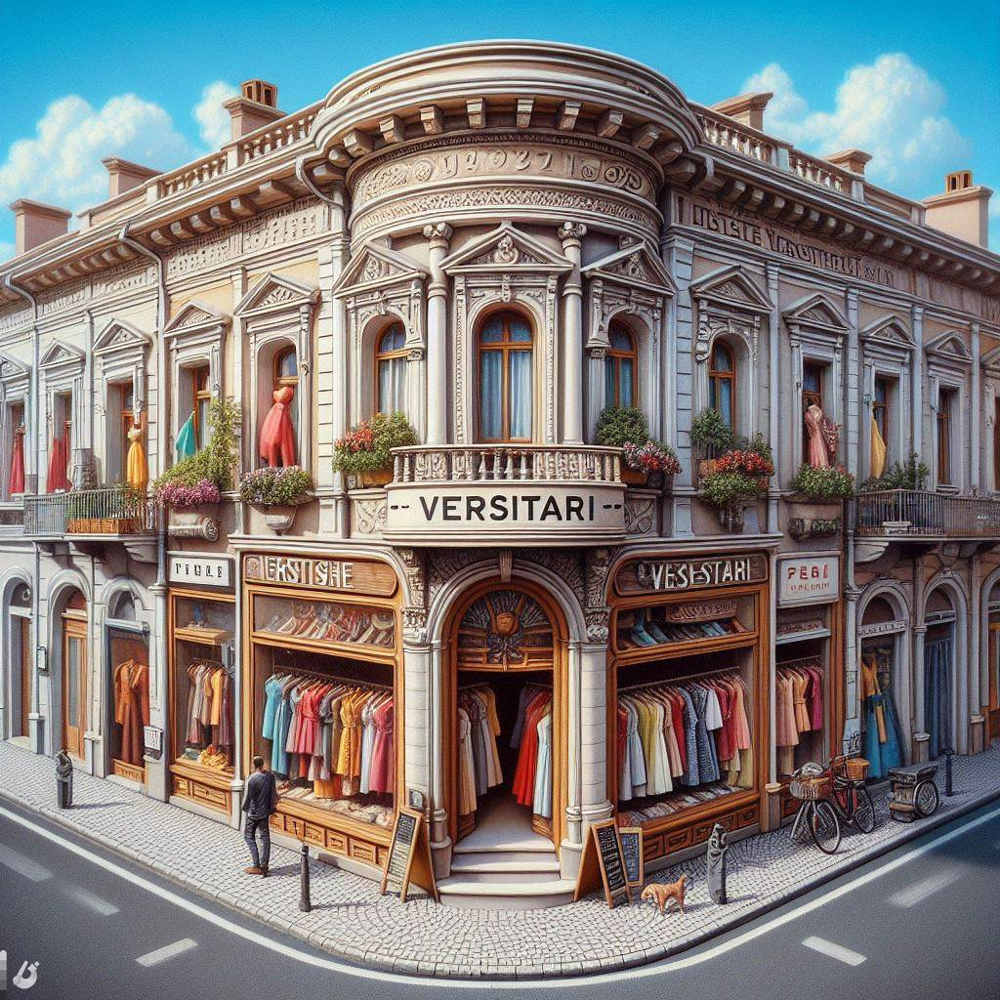

Bem-vindo à Vestiari, um ícone de elegância e sofisticação que nasceu
nas ruas de Paris, no vibrante século 19, e continua a encantar os
amantes da moda ao redor do mundo até os dias de hoje. Fundada no
coração da Cidade Luz, a Vestiari emergiu como um farol de estilo e
inovação, enraizada na rica tradição da moda parisiense. Desde sua
inauguração, nossa boutique tem sido um refúgio para aqueles que buscam
não apenas roupas, mas uma experiência que transcende o tempo. Nossa
história é entrelaçada com o talento excepcional de artesãos
apaixonados, dedicados a tecer histórias através de tecidos,
transformando cada peça em uma obra-prima de elegância e bom gosto.
Mantendo o compromisso com a excelência, a Vestiari preserva a essência
da alta costura, combinando técnicas tradicionais com uma visão moderna,
resultando em coleções que exalam um charme atemporal. Ao adentrar em
nossa boutique, você é recebido por um ambiente onde a tradição se une à
inovação. Nossos consultores de moda são verdadeiros embaixadores do
estilo, prontos para guiá-lo por entre os corredores repletos de peças
exclusivas, onde vestidos esvoaçantes, ternos impecáveis e acessórios
cativantes aguardam para complementar seu estilo pessoal. Ao longo dos
anos, a Vestiari tornou-se um destino de referência para ícones da moda,
personalidades influentes e conhecedores de estilo que buscam a
excelência em cada detalhe. Nossa loja se tornou um reduto de
criatividade, onde as tendências se encontram com a tradição, resultando
em uma fusão única de elegância parisiense. Atravessando eras, nossa
boutique permanece como um farol de inspiração, mantendo viva a paixão
pela moda e o compromisso com a qualidade que nos consolidou como uma
joia da alta costura parisiense. Na Vestiari, não apenas vestimos
corpos, mas contamos histórias de elegância e sofisticação, celebrando a
beleza intemporal que perdura através das gerações. Venha nos visitar e
descubra o encanto que é a Vestiari - onde o passado encontra o presente
na arte da moda.